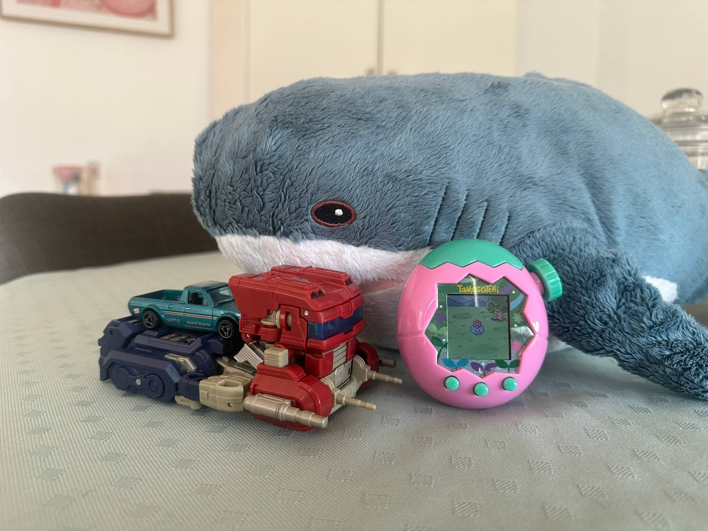

emjay • fish
Week 6: A Sunny Day in Paradise
As winter fades into memory here in the Southern Hemisphere and spring brings sun and warmer temperatures, what a perfect opportunity to celebrate such things in this week's featured toys — a Paradise and a Sunny. And, uh, some other things I guess. Sorry, I don't have a Sunstreaker figure for the Transformers section. Let's pop on our sunnies, relax with a cool drink and dive right in!
Tamagotchi of the Week:
Tamagotchi Paradise — Pink Land
Released July 2025
Name: Whitsunday
Did you know that not only are Tamagotchis still around, but they're still making new models too? This thing came out in July this year, though Americans got theirs in August because current poltical situation. Like all modern releases, it has a gimmick, and this time it's a zoom wheel on the top right, which lets you zoom in and out, since you take care of not only a single friendo, but an entire planet this time! The character designs on the Paradise are super cute, and the progression is very engaging, so I'm going to keep this one running for the foreseeable future. It's also very chunky :) Because this device has gene mixing, my current tama has the dark blue skin of one of its parents, which I think is really neat.
Transformer of the Week:
Studio Series SS-112 Transformers One Optimus Prime
Released 2024
Designed by Evan Brooks & Shuhei Umezu
Like everyone who's seen the movie, I loved Transformers One (are you listening Paramount execs? grumble grumble), so of course I wanted a toy from it. When I first saw this thing on store shelves I thought it looked so stupid, but after seeing the movie the scales fell from my eyes and I saw the truth. I really like this rendition of Optimus/Orion, which I know is maybe not a popular opinion, with many preferring the mainline toy, but eh I guess I'm won over easily by transparent plastic, brittle as it may be. When I ordered this from Target (completely unrelated to US Target, because reasons) I was actually sent Devastation Optimus Prime by mistake, which is, uh... yeah. Luckily Doc was able to source this for me through secret Transformers back channels, so I could enjoy the superior Optometrist Protagonist toy.
Hot Wheels of the Week:
1975 Datsun Sunny — Metalflake teal
Released 2025
Designed by Mark Jones
Toy number GJP81 (HYX365)
Before anyone says otherwise, this is decidedly a ute. It started life as a passenger car, then had the back half chopped off and a bed added, a textbook example of a coupé utility. Begone "light pickup truck" claims! Ahem, anyway, this thing is so cute, a piece of history that the US didn't get a taste of because of silly protectionist tax policy. I love the flared wheel arches that this mould of the Sunny has, they're not too extravagant but definitely give it a bit of car scene charm, while retaining its overall vibe. The paint job is lovely too, the linework and DATSUN logo are great, though I'm not sure about the 58 at the back — it's appropriately retro but stands out a bit too much I feel. Also it's a right hand drive! Which I guess makes sense, being a JDM car. I dunno, maybe it's my Aussie bias (definitely it's my Aussie bias) but I love a ute :)
Bread Tag of the Week:
Hadroklonis tegula — dark green
Manufactured by Schutte
Manufacturer code H 125
This is a real chonkster. Its girth is in service of closing bags of carrots, a task for which masses of thick plastic are a necessity. The indentations along the edges do give it a somewhat organic shape, lending credence to the idea that these things may in fact be living organisms. Maybe? Possibly? (No.) This is the first bread tag I've featured that I received via a trade with another occlupanologist, this one coming from the lovely CaleChipz (thank you!), travelling all the way from the frigid wastelands of Canada to the arid wastelands of Australia. It's a bit of a coincidence to feature two dark green archignathidae in a row, but ah well, maybe I'm drawn to them by forces unbeknownst to humankind.
Trucksim Mod of the Week:
ATS Wightman Transport Paint Job Pack
Released June 2021
Well this is certainly a livery. It has a logo, and uh, a name, and... it's white? Okay, so maybe Wightman's designers were asleep at the wheel a bit when making this thing, but I suppose logistics companies aren't supposed to be amazing and flashy and all that (oops...). I liked making this mod specifically because it gave me an opportunity to learn Wightman's story as a company. A tale as old as time, or at least as old as capitalism, a successful regional hauler that tried to expand beyond its means and ended up folding as a result. K-Mart (again, unrelated to the US store, actually basically the same store as Target Australia, go figure) claims another victim. OR SO I THOUGHT‽ In making this blog post I found out I was completely wrong, and the expansion was a success! Whoops. I'll go and clean up my misinformation across the web. Sorry Wightman!
You can grab it on Steam Workshop or
TruckyMods!
This post had a lot of references to the US, huh? Ah well. What if one of these little outro thingos wasn't meta-commentary on how every one of these apparently weekly blog posts is always late? What an idea. Oh, wait, dang it. I guess not this time.